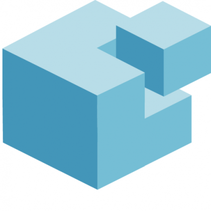

Saltstack
Gaston TJEBBES
Gaston TJEBBES
Trois niveaux de complexité:

Installer un "master"
yum install salt-master
Installer des "minion"
yum install salt-minion
Référencer
salt-key -a minion.example.com
Les modules fournissent un panel de commandes exécutables
salt '*' test.ping
salt 'minion.example.com' pkg.upgrade
#/srv/salt/_modules/hello.py
def message(filepath, message):
with open(filepath, w) as file_buffer:
file_buffer.write(message)
salt 'minion.example.com' hello.message /tmp/test "Hello world"
Les minions fournissent par défaut des variables d'environnement les 'grains' :
Sont personnalisables
Permettent de cibler les minion
salt 'minion.example.com' grains.get os
minion.example.com
------------------
Fedora
salt 'minion.example.com' grains.set node_type django
salt 'minion.example.com' grains.set role prod
salt -C 'G@node_type:django and G@role:prod' service.status nginx
salt -G "node_type:django" ssh.set_auth_key john \
"AAAAB3NzaC1yc2EAAAADAQABAAABAQDiG087JF.." enc="ssh-rsa" \
comment="john's key"
# /srv/salt/nginx.sls
{% if grains['node_type'] == 'django' %}
nginx:
pkg.installed:
- nginx
service.runing:
- name: nginx
- require:
- pkg: nginx
{% endif %}
salt 'minion.example.com' state.sls nginx
top.sls
le fichier d'entrée qui associe les états aux machines
# /srv/salt/top.sls
base:
'minion.example.com':
- django_project
- nginx
Ce qui va nous permettre de lancer
salt '*' state.highstate
require permet de requérir :
include:
- nginx
collect_static:
cmd.run:
- name: /root/collect_static.sh
- require:
- sls: nginx
Observe les modifications apportées par un autre état
gunicorn_conf_file:
file.managed:
- source: salt://django/source/etc/gunicorn.d/project.conf
- name: /etc/gunicorn.d/project.conf
gunicorn:
service.running:
- enable: True
- reload: True
- watch:
- file: gunicorn_conf_file
gunicorn_conf_file:
file.managed:
- source: salt://django/source/etc/gunicorn.d/project.conf
- name: /etc/gunicorn.d/project.conf
- template: jinja
Composant permettant de distribuer des variables de configuration :
#/srv/pillar/top.sls
base:
'minion.example.com':
- db_pass
#/srv/pillar/db_pass.sls
sql_user: django
sql_password: ma donnéessuper secret
# /srv/salt/django_project/sources/etc/django/settings.py
DATABASES = {
...
'USER': '{{ pillar['sql_user'] }}',
'PASSWORD': '{{ pillar['sql_password'] }}',
Par défaut les fichiers d'état sont placés dans le répertoire /srv/salt, mais il est possible :
Ce qui permet d'avoir des dépôts de states génériques.
Des repository git génériques alimentés par la communauté.
Dans /etc/salt/master
fileserver_backend:
- roots
- git
gitfs_remotes:
- https://github.com/saltstack-formulas/nginx-formula
- https://github.com/saltstack-formulas/memcached-formula
En configurant nos données pillar, on dispose de states avancés pour installer memcached et nginx.
outputers
Le format des données renvoyées par les states
returners
La destination des données renvoyées (base de données, mail, irc ...)
salt-mine
permet d'autoriser les minions à communiquer entre eux
salt-reactor
permet, sur la base des events renvoyés, de spécifier des callbacks (ex : ajouter une machine au serveur de monitoring lorsqu'un nouveau serveur a été initialisé).
salt-cloud
propose une interface pour les différentes solutions de cloud IAAS (Aws, rackspace, openstack ...)
salt-virt
permet de manipuler de manière unifier et transparente un ensemble d'hyperviseur kvm
À noter : une nette progression appréciable
Le lien vers la conf